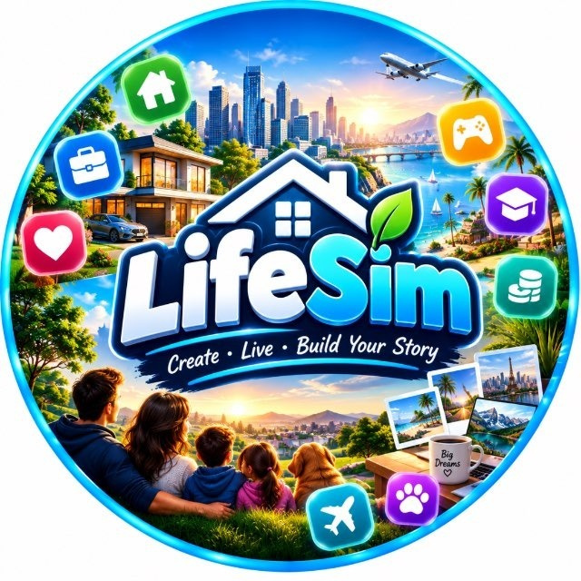

LifeSim - Game 👶👨👴
Live a whole life in a few minutes. Study, find a job, fall in love, buy a house, make choices and face random events written by AI, from birth to old age. Every life is different, so every game is a new story. A free life simulation game right inside Telegram.